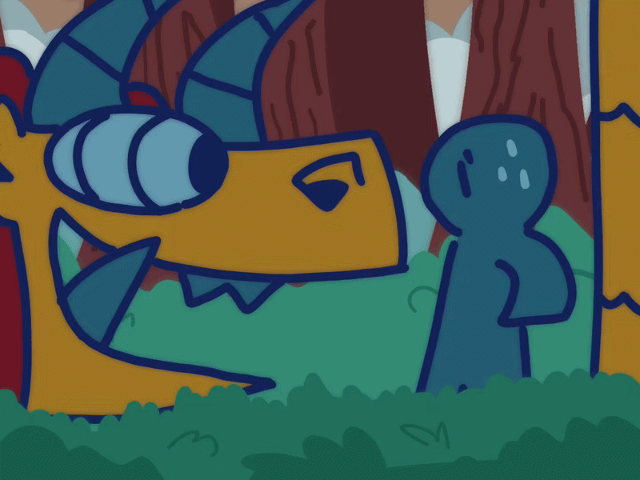

you tentatively reach out your hand out towards the creature and give it a little wave. It presses its nose against your entire body and inhales deeply, throwing you off balance. “Hey little guy, have you seen my stick around here? I think I saw it blow somewhere over here… and your tininess gives you the perfect vantage point! Can you help me find it?” Oh. You didn’t know monsters could talk. He looks quite worried.
Why can’t he just find another? All these sticks look the same to you… Agree to help, it’s not like you have anything else going on. Back to beginning.